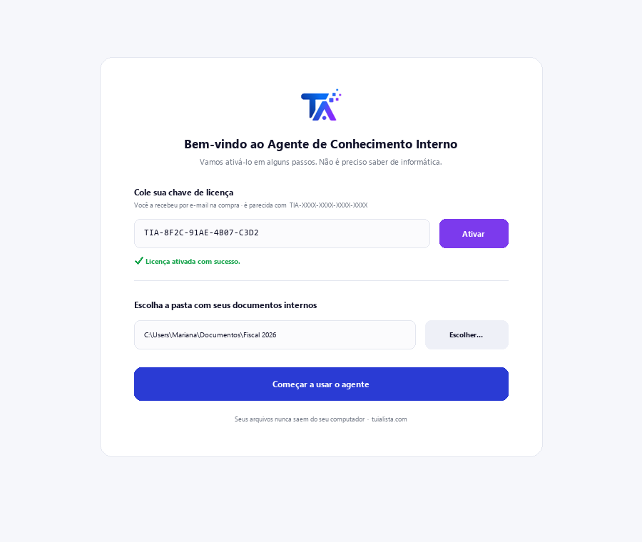
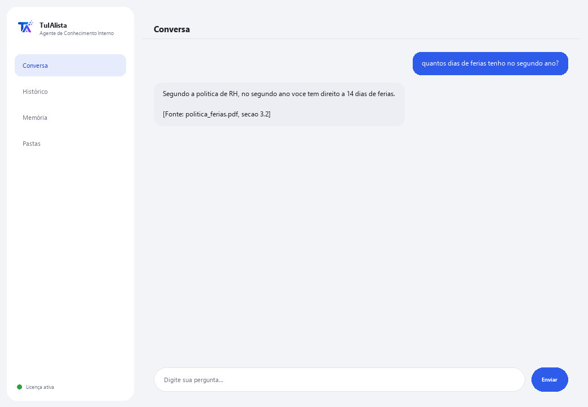

Agente de Conhecimento Interno
Transforma todos os documentos da sua empresa em uma base de conhecimento que responde perguntas citando a fonte.
O que resolve e o que você precisa?
Em toda empresa o conhecimento está espalhado: políticas em um PDF, processos em um Word, preços em um Excel, a integração em um PowerPoint. A resposta para “quantos dias de férias tenho direito” existe, mas ninguém sabe em qual arquivo. Este agente indexa tudo e responde citando exatamente de onde veio cada dado.
- Você precisa: sua chave de licença (TIA-XXXX-XXXX-XXXX-XXXX) e a pasta com os documentos internos. Nada de Python nem conhecimento técnico.
- Primeiro resultado em menos de 5 minutos: instala, ativa, escolhe sua pasta e pergunta diretamente o que precisar saber.
- O conhecimento da sua empresa nunca sai do seu computador — o índice é construído e consultado localmente.
soporte@tuialista.com ou acesse tuialista.com/soporte — normalmente respondemos no mesmo dia útil.1 O que este agente faz
Você aponta para a pasta com os documentos internos e o agente:
- Indexa todos eles (PDF, Word, Excel, CSV, PowerPoint, texto, Markdown) em uma base local.
- Divide cada documento em fragmentos para encontrar a parte exata que responde.
- Responde perguntas da sua equipe usando só esses documentos, e sempre cita de onde veio cada dado ([Fonte: arquivo, seção]).
- Resume um tema consolidando o que dizem vários documentos.
- Detecta lacunas de conhecimento: temas muito mencionados mas sem um documento dedicado.
- Monta um diretório de responsáveis: quem aparece como encarregado de quê.
O essencial: se a resposta não está nos documentos, o agente diz isso em vez de inventar.
2 Instalação (2 minutos)
Para Windows. Não precisa de internet o tempo todo nem enviar nada para a nuvem.
Baixe o instalador em tuialista.com/descargar (agente Conhecimento) e abra-o. Ele cria um atalho na sua área de trabalho com o logo — não precisa de Python nem terminal.
Dê duplo clique no novo ícone. Cole sua chave de licença (você a recebeu por e-mail na compra) e clique em Ativar. Você verá um check verde quando for válida.
Selecione a pasta com seus documentos internos e clique em Começar a usar o agente. Na próxima vez ele abre direto — lembra sua chave e sua pasta.

3 Como usar
O agente abre uma janela de chat, como um app de mensagens — não é uma tela preta de programador. Seu uso principal é perguntar diretamente na caixa de texto, e também tem alguns comandos de exploração:

> pergunta livre?O uso principal. Escreva sua pergunta como ela vem, ex.: quantos dias de férias tenho no segundo ano? — o agente busca nos documentos e responde citando a fonte. Se a informação não estiver lá, ele diz isso em vez de inventar.
> temasLista as categorias/áreas cobertas pelos seus documentos (políticas, processos, segurança, RH, finanças...) e em quantos arquivos cada uma aparece.
> resumen <tema>Junta o que dizem vários documentos sobre um tema e monta um resumo executivo, apontando contradições se houver. Ex.: resumen vacaciones.
> huecosTemas bastante mencionados mas sem documento próprio — útil para saber quais políticas vale a pena escrever.
> directorioNomes de pessoas que aparecem como responsáveis/encarregados/contatos e em quais documentos.
> analizar <arquivo>Linhas, número de fragmentos e uma prévia de um documento indexado.
> sairEncerra a sessão (exit também funciona).
4 Exemplos de uso comum
Resolver uma dúvida da equipe
qual é o procedimento para solicitar uma compra acima de R$10.000? — resposta com a citação do documento e da seção exatos.
Preparar um resumo para integração
resumen seguridad
Auditar a documentação
temas → huecos — você vê quais áreas estão bem cobertas e quais quase não têm documentação.
Encontrar o responsável
directorio
5 Perguntas frequentes
Os documentos da minha empresa são enviados para a internet?
Quais formatos ele aceita?
Ele realmente cita a fonte?
O que acontece se a resposta não estiver nos documentos?
O que ele faz se dois documentos se contradizem?
Adicionei documentos novos, ele reconhece?
Como ele escolhe quais fragmentos usar?
Ele lê um PDF escaneado?
Em que idioma ele responde?
Ele modifica meus documentos?
6 Solução de problemas
Não indexa um .pdf, .docx, .xlsx ou .pptx
Diz “0 documentos indexados”
Uma resposta cita o documento errado
Diz “Licença inválida” ou pede para reconectar
“Nenhum provedor de IA configurado”
Nenhuma dessas soluções resolveu seu problema? Escreva para nós diretamente — teremos prazer em revisar com você.
soporte@tuialista.com ou acesse tuialista.com/soporte — normalmente respondemos no mesmo dia útil.7 Privacidade e confidencialidade
O conhecimento da sua empresa nunca sai do seu computador.
- O agente lê, divide em fragmentos e indexa os documentos localmente, no seu próprio computador. Não os envia para nenhum servidor.
- As buscas, os temas, as lacunas e o diretório são calculados no seu computador.
- A única coisa que trafega pela internet é: (1) uma verificação de que sua licença está ativa — que não inclui seus documentos —, e (2) ao responder uma pergunta ou gerar um resumo, os fragmentos mais relevantes são enviados ao motor de IA para redigir a resposta. O resto do conhecimento permanece local.